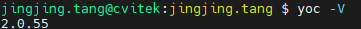

2. 编译环境¶
2.1. 安装python及pip¶
python get-pip.py
安装python的serial和usb驱动模块，执行如下命令
pip3 install pyserial pyusb
安装yaml模块，执行如下命令
pip3 install pyyaml
注解
如果上面pyyaml安装失败，可以使用下面命令安装
pip3 install pyyaml -i http://pypi.douban.com/simple –trusted-host pypi.douban.com
注意
PS：ubuntu版本推荐高于20.0.4
2.2. 安装YOCTOOL工具¶
Linux环境中使用指令安装yoctool
sudo pip install yoctools -U
使用 yoc -V查看对应版本，确保版本处于或者高于2.0.25

输入product version 查看product的版本，确保product安装成功

2.3. SDK文件说明¶

顶层目录中各个文件夹说明：
boards: 存放板卡相关配置
components: 存放各种类型组件，例如aos内核，cli命令行，网络组件，以及CSI驱动
host-tools: 为交叉编译工具链，AliOS使用玄铁交叉编译工具链Xuantie-900-gcc-elf-newlib-x86_64-V2.6.1
solutions: 为解决方案目录，主要存放业务逻辑，运行bin档等，可支持快速启动和正常启动两种解决方案。
solutions下各目录作用说明：
application 主要是应用相关部分
customization 客户应用相关以及不同产品形态配置，其下各个主要文件说明：
custom_sysparam.c |
vb配置 |
custom_viparam.c |
vi配置 sensor相关都放置在这里 |
custom_voparam.c |
vo配置 |
custom_vpssparam.c |
主要是vpss配置 |
custom_vencparam.c |
主要是venc的配置 |
custom_moduleparam.c |
主要是各模块的通用配置 |
custom_platform.c |
平台相关配置，如pinmux设定，GPIO拉高等操作 |
custom_event.c |
系统/模块事件相关配置 |
py_tool：python的工具
script：编译的脚本
package.yaml文件说明
https://help.aliyun.com/document_detail/308617.html
package.yaml主要用于定义和开启功能宏比如选择不同的Sensor，以及需要依赖的组件选择
2.4. 快速模式和正常启动模式¶
2.5. 如何编译AliOS¶
设定环境变量(以cv1842hp_wevb_0014a_spinor为例)
$ source build/envsetup_soc.sh
-------------------------------------------------------------------------------------------------------
Usage:
(1) menuconfig - Use menu to configure your board.
ex: $ menuconfig
(2) defconfig $CHIP_ARCH - List EVB boards($BOARD) by CHIP_ARCH.
** cv184x ** -> ['cv184x', 'cv1841c', 'cv1842cp', 'cv1842hp', 'cv1843hp']
ex: $ defconfig cv184x
(3) defconfig $BOARD - Choose EVB board settings.
ex: $ defconfig cv1842hp_wevb_0014a_spinor
ex: $ defconfig cv1842cp_wevb_0015a_spinand
-------------------------------------------------------------------------------------------------------
选定EVB cv1842hp_wevb_0014a_spinor
$ defconfig cv1842hp_wevb_0014a_spinor
====== Environment Variables =======
PROJECT: cv1842hp_wevb_0014a_spinor, DDR_CFG=ddr3_2133_x16
CHIP_ARCH: CV184X, DEBUG=0
SDK VERSION: musl_arm, RPC=0
ATF options: ATF_KEY_SEL=default, BL32=1
Linux source folder:linux_5.10, Uboot source folder: u-boot-2021.10
ENABLE_DUAL_OS: y
CROSS_COMPILE_PREFIX: arm-none-linux-musleabihf-
ENABLE_BOOTLOGO: 0
Flash layout xml: build/boards/cv184x/cv1842hp_wevb_0014a_spinor/partition/partition_spinor.xml
Sensor tuning bin: cvsens_cv2003
Output path: install/soc_cv1842hp_wevb_0014a_spinor
双系统配置
通过menuconfig命令，勾选对应配置，即可编译AliOS镜像。

默认是正常启动模式。可以通过勾选对应配置，在快速启动模式和正常模式之间切换。

编译AliOS
AliOS镜像文件被打包到启动镜像中通常通过一条命令。
$ build_uboot
Run build_uboot() function
Run _link_uboot_logo() function
......
[TARGET] alios-depends
......
[TARGET] alios-build
......
INFO: raw2cimg small part size
INFO: size:b5c42, offset:200000, part_sz:100000, crc:38896f66
INFO: Packing yoc.bin done!
编译完成后，生成的AliOS镜像文件yoc.bin将被拷贝到install目录中。
2.6. 镜像说明¶
在/solutions/normboot的生成文件中：
yoc.elf：完整的可执行文件等，可以被 objdump 或 readelf 工具解析
yoc.bin：运行程序bin档案，烧录到Flash 的小核镜像文件
yoc.asm：反汇编文件
yoc.map：内存映射文件
yoc_sdk/lib/*.a：静态库
generated：AliOS 系统的固件镜像文件结构，文件结构描述如下：
boot0：一级 Bootloader（FSBL）的二进制文件
boot：二级 Bootloader 的二进制文件（如 U-Boot）
config.yaml：分区表和固件配置的核心文件
imtb：镜像表（Image Table）二进制文件
imtb.hex：镜像表的 HEX 格式
prim：主系统镜像（yoc.bin 的别名）
prim.hex：主系统镜像的 HEX 格式